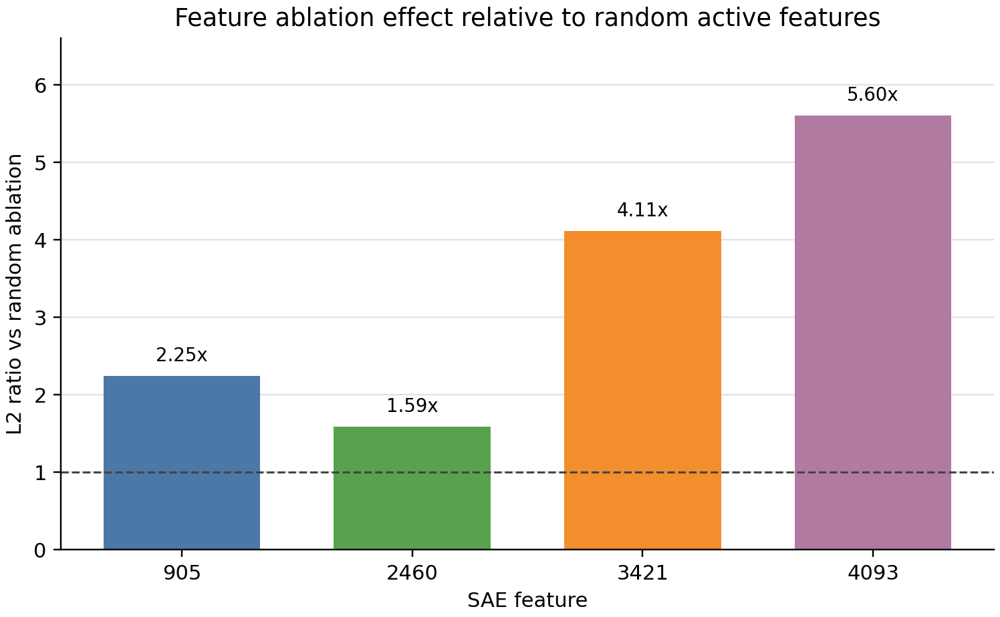
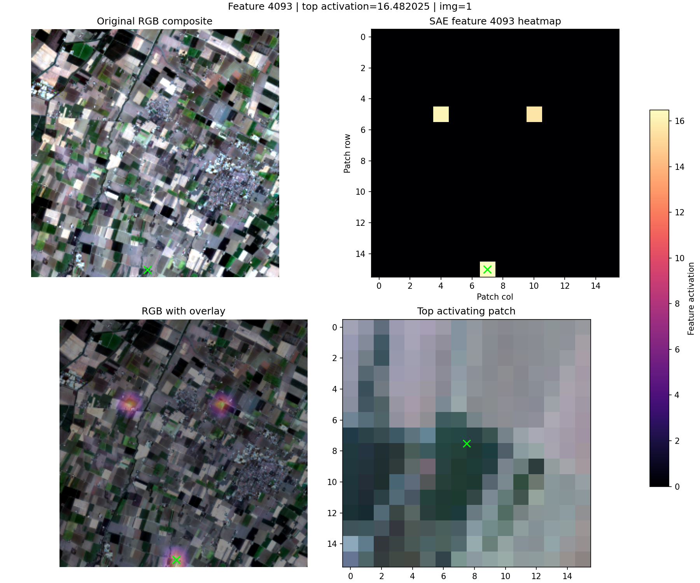
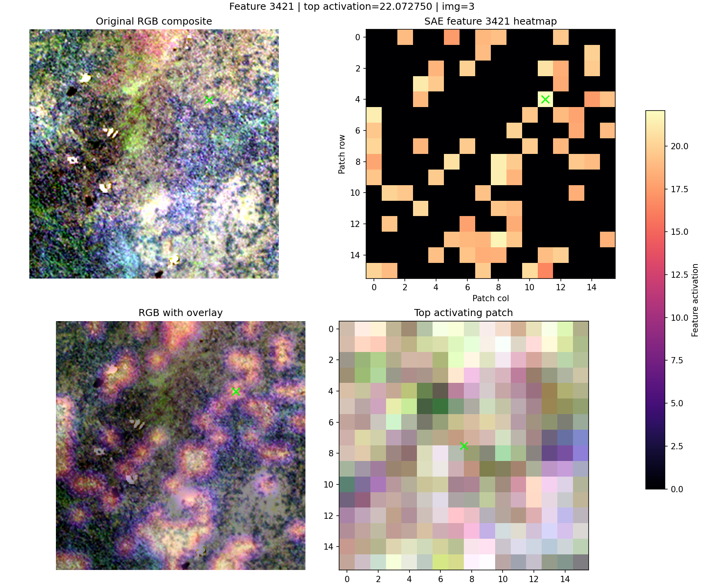
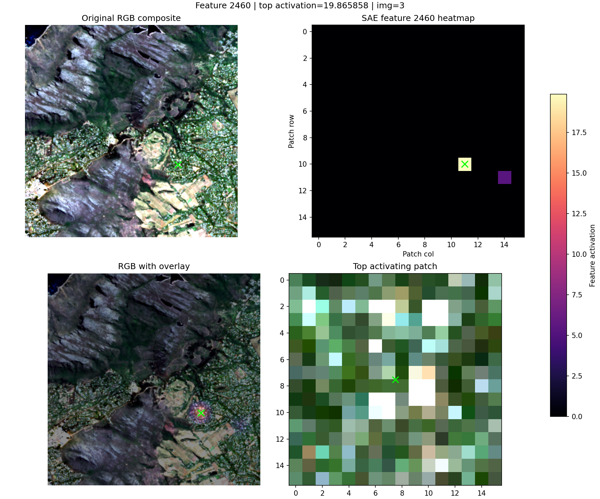
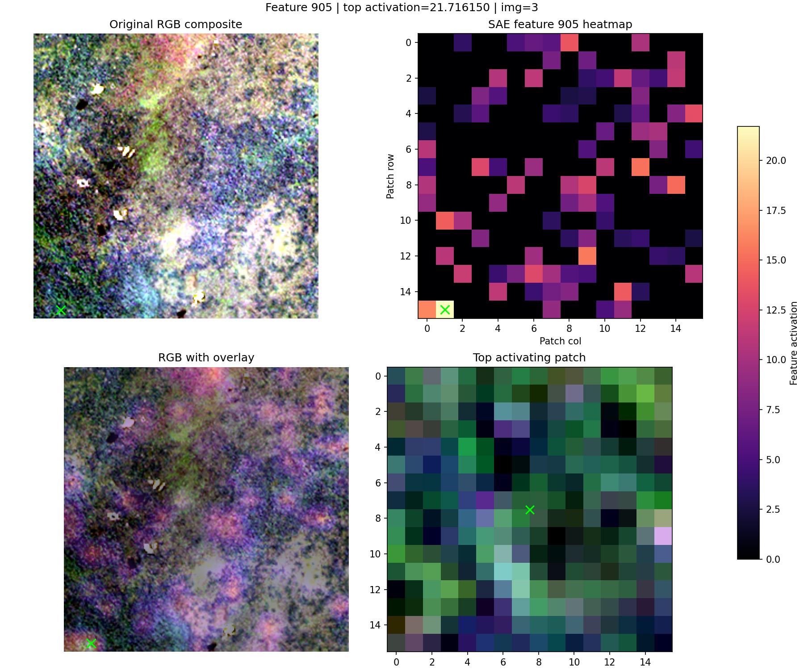

Early project note
Sparse Autoencoders for Geospatial Foundation Models: Early Experiments
Exploring whether sparse features can help us inspect Prithvi-EO-2.0 representations.
This is an early project note documenting preliminary experiments. The results should be read as candidate interpretations, not definitive semantic labels.
Motivation
Geospatial foundation models are becoming useful building blocks for Earth observation tasks such as land-cover mapping, environmental monitoring, disaster response, and infrastructure analysis. These systems can absorb large volumes of multi-spectral satellite data, but that also makes their internal representations difficult to inspect.
Interpretability matters in this setting because mistakes are rarely just abstract model errors. A model may latch onto cloud artifacts, seasonal patterns, sensor effects, geography-specific cues, or land-cover imbalance. For Earth observation, understanding what the model appears to represent can help us debug failure modes before they enter downstream workflows.
My interest is in the intersection of mechanistic interpretability and geospatial AI. Sparse autoencoders have been useful for studying internal features in language models. I wanted to see whether a similar approach could give a practical inspection tool for geospatial foundation models.
Why SAEs for geospatial foundation models?
Sparse autoencoders try to represent dense model activations using a larger set of sparse features. If a feature activates on a coherent set of image patches, it becomes a candidate handle for interpretation.
This is not exactly the same problem as LLM interpretability. Satellite models operate over spatial patches, multiple spectral bands, sensor-specific artifacts, and geographic context. RGB images are only part of the story: NIR, SWIR, NDVI, NDWI, brightness, and texture can all matter. That makes qualitative inspection useful, but incomplete.
The goal here is modest: find candidate sparse features, inspect where they activate, compare them against simple remote-sensing statistics, and test whether ablating them changes the SAE-reconstructed representation more than a random active feature.
Experimental setup
encoder.blocks.6
d_hidden=4096, k=64
I extracted intermediate representations from Prithvi, trained a Top-K SAE, and then inspected selected features using RGB overlays, contact sheets, simple spectral and texture summaries, and feature ablations.
First observations
The most useful signal came from combining visual inspection with quantitative checks. Some features appeared visually coherent in top-activating patches, but RGB alone was not enough to support an interpretation. For several features, SWIR brightness, edge density, or texture statistics were more informative than the visible image.
I also found that ablation was a useful sanity check. Ablating selected SAE features changed reconstructed Prithvi representations more than ablating random active features. This does not show downstream task behavior changed. It only measures changes in SAE-reconstructed representation space.

Candidate features
The examples below are qualitative candidate interpretations. The green box marks the highest-activating patch in the displayed chip. I am not treating these as definitive semantic labels; they are starting points for validation.




What worked and what did not
A ReLU+L1 SAE produced features that were too dense for the kind of inspection I wanted. Switching to a Top-K SAE gave cleaner sparse activations and made the top examples easier to reason about.
Some early features captured no-data or black-patch artifacts rather than meaningful scene structure. Filtering invalid patches was important before trusting the contact sheets or feature summaries.
The workflow that worked best was iterative: inspect top patches, check simple statistics such as NDVI, NDWI, brightness, and texture, then run a small ablation comparison against random active features. Each step reduced one source of over-interpretation.
Limitations
- This is one model: Prithvi-EO-2.0-300M.
- This is one layer:
encoder.blocks.6. - The dataset is small: 500 HLS chips.
- The feature interpretations are preliminary and should be treated as candidate labels.
- I have not yet run downstream task ablations.
- Stronger validation would require labels, geography-aware baselines, and review from domain experts.
Next steps
- Build more contact sheets and validate a larger set of sparse features.
- Use NDVI, NDWI, brightness, SWIR brightness, texture, and edge-density statistics more systematically.
- Run downstream task ablations instead of only reconstruction-space ablations.
- Compare features across layers to see whether earlier and later representations differ.
- Possibly compare against other geospatial foundation models such as Clay or TerraMind later.